Statial
Farhan Ameen
School of Mathematics and Statistics, University of Sydney, AustraliaSourish Iyengar
School of Mathematics and Statistics, University of Sydney, AustraliaAlex Qin
School of Mathematics and Statistics, University of Sydney, AustraliaEllis Patrick
Westmead Institute for Medical Research, University of Sydney, AustraliaSchool of Mathematics and Statistics, University of Sydney, Australia25 October 2023
Source:vignettes/Statial.Rmd
Statial.RmdInstallation
# Install the package from Bioconductor
if (!requireNamespace("BiocManager", quietly = TRUE)) {
install.packages("BiocManager")
}
BiocManager::install("Statial")Overview
There are over 37 trillion cells in the human body, each taking up
different forms and functions. The behaviour of these cells can be
described by canonical characteristics, but their functions can also
dynamically change based on their environmental context, leading to
cells with diverse states. Understanding changes in cell state and the
interplay between cells is key to understanding their mechanisms of
action and how they contribute to human disease. Statial is
a suite of functions for identifying changes in cell state. This guide
will provide a step-by-step overview of some key functions within
Statial.
Loading example data
To illustrate the functionality of Statial we will use a multiplexed ion beam imaging by time-of-flight (MIBI-TOF) dataset profiling tissue from triple-negative breast cancer patients\(^1\) by Keren et al., 2018. This dataset simultaneously quantifies in situ expression of 36 proteins in 34 immune rich patients. Note: The data contains some “uninformative” probes and the original cohort included 41 patients.
These images are stored in a SingleCellExperiment object
called kerenSCE. This object contains 57811 cells across 10
images and includes information on cell type and patient survival.
Note: The original dataset was reduced down from 41 images to 10 images for the purposes of this vignette, due to size restrictions.
# Load head and neck data
data("kerenSCE")
kerenSCE
#> class: SingleCellExperiment
#> dim: 48 57811
#> metadata(0):
#> assays(1): intensities
#> rownames(48): Na Si ... Ta Au
#> rowData names(0):
#> colnames(57811): 1 2 ... 171281 171282
#> colData names(8): x y ... Survival_days_capped Censored
#> reducedDimNames(0):
#> mainExpName: NULL
#> altExpNames(0):Kontextual: Identifying discrete changes in cell state
Kontextual is a method to evaluate the localisation
relationship between two cell types in an image. Kontextual
builds on the L-function by contextualising the relationship between two
cell types in reference to the typical spatial behaviour of a \(3^{rd}\) cell type/population. By taking
this approach, Kontextual is invariant to changes in the
window of the image as well as tissue structures which may be
present.
The definitions of cell types and cell states are somewhat ambiguous,
cell types imply well defined groups of cells that serve different roles
from one another, on the other hand cell states imply that cells are a
dynamic entity which cannot be discretised, and thus exist in a
continuum. For the purposes of using Kontextual we treat
cell states as identified clusters of cells, where larger clusters
represent a “parent” cell population, and finer sub-clusters
representing a “child” cell population. For example a CD4 T cell may be
considered a child to a larger parent population of Immune cells.
Kontextual thus aims to see how a child population of cells
deviate from the spatial behaviour of their parent population, and how
that influences the localisation between the child cell state and
another cell state.
Cell type hierarchy
A key input for Kontextual is an annotation of cell type hierarchies. We will need these to organise all the cells present into cell state populations or clusters, e.g. all the different B cell types are put in a vector called bcells.
For the purposes of this vignette, these will be manually defined.
Alternatively, you can use the treeKor bioconductor package
treekoR
to define these hierarchies in a data driven way.
# Examine all cell types in image
unique(kerenSCE$cellType)
#> [1] "Keratin_Tumour" "CD3_Cell" "B" "CD4_Cell"
#> [5] "Dc/Mono" "Unidentified" "Macrophages" "CD8_Cell"
#> [9] "other immune" "Endothelial" "Mono/Neu" "Mesenchymal"
#> [13] "Neutrophils" "NK" "Tumour" "DC"
#> [17] "Tregs"
# Set up cell populations
tumour <- c("Keratin_Tumour", "Tumour")
bcells <- c("B")
tcells <- c("CD3_Cell", "CD4_Cell", "CD8_Cell", "Tregs")
myeloid <- c("Dc/Mono", "DC", "Mono/Neu", "Macrophages", "Neutrophils")
endothelial <- c("Endothelial")
mesenchymal <- c("Mesenchymal")
tissue <- c(endothelial, mesenchymal)
immune <- c(bcells, tcells, myeloid, "NK", "other immune") # NK = Natural Killer cells
all <- c(tumour, tissue, immune, "Unidentified")Discrete cell state changes within a single image
Here we examine an image highlighted in the Keren et al. 2018 manuscript where the relationship between two cell types depends on a parent cell population. In image 6 of the Keren et al. dataset, we can see that p53+ tumour cells and immune cells are dispersed. However when the behaviour of p53+ tumour cells are placed in the context of the spatial behaviour of its broader parent population tumour cells, p53+ tumour cells and immune would appear localised.w
# Lets define a new cell type vector
kerenSCE$cellTypeNew <- kerenSCE$cellType
# Select for all cells that express higher than baseline level of p53
p53Pos = assay(kerenSCE)["p53",] > -0.300460
# Find p53+ tumour cells
kerenSCE$cellTypeNew[kerenSCE$cellType %in% tumour] <- "Tumour"
kerenSCE$cellTypeNew[p53Pos & kerenSCE$cellType %in% tumour] <- "p53_Tumour"
#Group all immune cells under the name "Immune"
kerenSCE$cellTypeNew[kerenSCE$cellType %in% immune] <- "Immune"
# Plot image 6
kerenSCE |>
colData() |>
as.data.frame() |>
filter(imageID == "6") |>
filter(cellTypeNew %in% c("Immune", "Tumour", "p53_Tumour")) |>
arrange(cellTypeNew) |>
ggplot(aes(x = x, y = y, color = cellTypeNew)) +
geom_point(size = 1) +
scale_colour_manual(values = c("#505050", "#64BC46","#D6D6D6")) + guides(colour = guide_legend(title = "Cell types", override.aes = list(size=3)))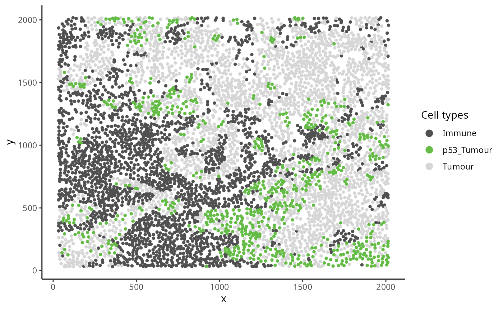
Kontextual accepts a SingleCellExperiment
object, a single image, or list of images from a
SingleCellExperiment object, which gets passed into the
cells argument. The two cell types which will be evaluated
are specified in the to and from arguments. A
parent population must also be specified in the parent
argument, note the parent cell population must include the
to cell type. The argument r will specify the
radius which the cell relationship will be evaluated on.
Kontextual supports parallel processing, the number of
cores can be specified using the cores argument.
Kontextual can take a single value or multiple values for
each argument and will test all combinations of the arguments
specified.
We can calculate these relationships across all images for a single radius.
p53_Kontextual <- Kontextual(
cells = kerenSCE,
r = 50,
from = "p53_Tumour",
to = "Immune",
parent = c("p53_Tumour", "Tumour"),
cellType = "cellTypeNew"
)
p53_Kontextual
#> imageID test original kontextual r weightQuantile inhom edge
#> 1 1 p53_Tumour__Immune NA NA 50 0.8 TRUE FALSE
#> 2 14 p53_Tumour__Immune NA NA 50 0.8 TRUE FALSE
#> 3 18 p53_Tumour__Immune NA NA 50 0.8 TRUE FALSE
#> 4 21 p53_Tumour__Immune NA NA 50 0.8 TRUE FALSE
#> 5 29 p53_Tumour__Immune NA NA 50 0.8 TRUE FALSE
#> 6 3 p53_Tumour__Immune NA NA 50 0.8 TRUE FALSE
#> 7 32 p53_Tumour__Immune NA NA 50 0.8 TRUE FALSE
#> 8 35 p53_Tumour__Immune NA NA 50 0.8 TRUE FALSE
#> 9 5 p53_Tumour__Immune NA NA 50 0.8 TRUE FALSE
#> 10 6 p53_Tumour__Immune NA NA 50 0.8 TRUE FALSE
#> includeZeroCells window window.length
#> 1 TRUE convex NA
#> 2 TRUE convex NA
#> 3 TRUE convex NA
#> 4 TRUE convex NA
#> 5 TRUE convex NA
#> 6 TRUE convex NA
#> 7 TRUE convex NA
#> 8 TRUE convex NA
#> 9 TRUE convex NA
#> 10 TRUE convex NAThe kontextCurve function plots the L-function value and
Kontextual values over a range of radii. If the points lie above the red
line (expected pattern) then localisation is indicated for that radius,
if the points lie below the red line then dispersion is indicated. As
seen in the following plot Kontextual is able to correctly identify
localisation between p53 and Immune in the
example image for a certain range of radii. When the radius gets too
large the overall relationship between p53 and
Immune looks dispersed. The original L-function is not able
to identify localisation at any value of radii.
curves <- kontextCurve(
cells = kerenSCE,
from = "p53_Tumour",
to = "Immune",
parent = c("p53_Tumour", "Tumour"),
rs = seq(10, 510, 100),
image = "6",
cellType = "cellTypeNew",
cores = nCores
)
kontextPlot(curves)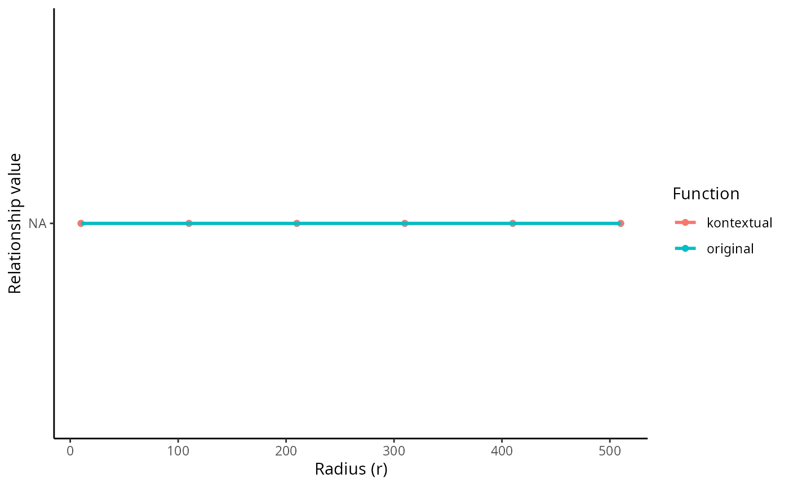
Alternatively all pairwise cell relationships and their corresponding
parent in the dataset can be tested. A data frame with all pairwise
combinations can be creating using the parentCombinations
function. This function takes in a vector of all the cells, as well as
all the parent vectors set up earlier. As shown below the output is a
data frame specifying the to, from, and
parent arguments for Kontextual.
# Get all relationships between cell types and their parents
parentDf <- parentCombinations(
all = all,
tumour,
bcells,
tcells,
myeloid,
endothelial,
mesenchymal,
tissue,
immune
)Discrete cell state changes across all images
Rather than specifying to, from, and
parent in Kontextual, the output from
parentCombinations can be inputed into
Kontextual using the parentDf argument, to
examine all pairwise relationships in the dataset. This chunk will take
a signficant amount of time to run, for demonstration the results have
been saved and are loaded in.
# Running Kontextual on all relationships across all images.
kerenKontextual <- Kontextual(
cells = kerenSCE,
parentDf = parentDf,
r = 50,
cores = nCores
)
data("kerenKontextual")
bigDiff <- (kerenKontextual$original - kerenKontextual$kontextual)
head(kerenKontextual[order(bigDiff),], 10)
#> imageID test original kontextual r
#> 3393 18 CD3_Cell__Mesenchymal__tcells 42.540392 293.08841 50
#> 4499 5 Tumour__Endothelial__tumour -22.329210 181.64536 50
#> 4517 32 Tumour__B__tumour 71.070831 244.33654 50
#> 4589 5 Tumour__Mono/Neu__tumour -8.341033 126.48917 50
#> 4537 32 Tumour__CD4_Cell__tumour 37.890443 150.58312 50
#> 1288 35 Macrophages__Keratin_Tumour__immune -12.199943 92.73999 50
#> 3519 5 CD3_Cell__Unidentified__tcells -27.935002 73.33203 50
#> 4609 5 Tumour__other immune__tumour 9.069621 106.13098 50
#> 4509 5 Tumour__Mesenchymal__tumour -3.104019 93.16538 50
#> 4539 5 Tumour__CD4_Cell__tumour -15.308151 69.23822 50
#> weightQuantile inhom edge includeZeroCells window window.length
#> 3393 0.8 TRUE FALSE TRUE convex NA
#> 4499 0.8 TRUE FALSE TRUE convex NA
#> 4517 0.8 TRUE FALSE TRUE convex NA
#> 4589 0.8 TRUE FALSE TRUE convex NA
#> 4537 0.8 TRUE FALSE TRUE convex NA
#> 1288 0.8 TRUE FALSE TRUE convex NA
#> 3519 0.8 TRUE FALSE TRUE convex NA
#> 4609 0.8 TRUE FALSE TRUE convex NA
#> 4509 0.8 TRUE FALSE TRUE convex NA
#> 4539 0.8 TRUE FALSE TRUE convex NAAssociate discrete state changes with survival outcomes
To examine whether the features obtained from Statial
are associated with patient outcomes or groupings, we can use the
colTest function from SpicyR. To understand if
survival outcomes differ significantly between 2 patient groups, specify
type = "survival" in colTest. Here we examine
which features are most associated with patient survival using the
Kontextual values as an example. To do so, survival data is extracted
from kerenSCE and converted into the survival object
kerenSurv.
# Extracting survival data
survData = kerenSCE |>
colData() |>
data.frame() |>
select(imageID, Survival_days_capped, Censored) |>
unique()
# Creating survival vector
kerenSurv = Surv(survData$Survival_days_capped, survData$Censored)
names(kerenSurv) = survData$imageIDIn addition to this, the Kontextual results must be converted from a
data.frame to a wide matrix, this can be done
using prepMatrix. Note, to extract the original L-function
values, specify column = "original" in
prepMatrix.
# Converting Kontextual result into data matrix
kontextMat = prepMatrix(kerenKontextual)
# Ensuring rownames of kontextMat match up with rownames of the survival vector
kontextMat = kontextMat[names(kerenSurv), ]
# Replace NAs with 0
kontextMat[is.na(kontextMat )] <- 0Finally, both the Kontextual matrix and survival object are passed
into colTest, with type = "survival" to obtain
the survival results.
# Running survival analysis
survivalResults = spicyR::colTest(kontextMat, kerenSurv, type = "survival")
head(survivalResults)
#> coef se.coef pval adjPval
#> Mesenchymal__Dc/Mono__mesenchymal 1.100 0.330 0.0012 0.56
#> Mesenchymal__other immune__tissue 0.096 0.048 0.0440 0.62
#> other immune__Endothelial__myeloid 0.047 0.024 0.0490 0.62
#> CD4_Cell__Neutrophils__immune 0.110 0.055 0.0500 0.62
#> CD4_Cell__CD8_Cell__tcells 0.580 0.300 0.0500 0.62
#> CD4_Cell__Keratin_Tumour__immune -0.150 0.075 0.0510 0.62
#> cluster
#> Mesenchymal__Dc/Mono__mesenchymal Mesenchymal__Dc/Mono__mesenchymal
#> Mesenchymal__other immune__tissue Mesenchymal__other immune__tissue
#> other immune__Endothelial__myeloid other immune__Endothelial__myeloid
#> CD4_Cell__Neutrophils__immune CD4_Cell__Neutrophils__immune
#> CD4_Cell__CD8_Cell__tcells CD4_Cell__CD8_Cell__tcells
#> CD4_Cell__Keratin_Tumour__immune CD4_Cell__Keratin_Tumour__immuneAs we can see from the results
Mesenchymal__Dc/Mono__mesenchymal is the most significant
pairwise relationship which contributes to patient survival. That is the
relationship between Mesenchymal cells and macrophage cells, relative to
the parent population of all tissue cells. We can see that there is a
negative coefficient associated with this relationship, which tells us a
decrease in localisation of Mesenchymal and Macrophages leads to poorer
survival outcomes for patients.
The association between
Mesenchymal__Dc/Mono__mesenchymal and survival can also be
visualised on a Kaplan-Meier curve. We must first extract the Kontextual
values of this relationship across all images. Next we determine if
Mesenchymal and Macrophages are relatively attracted or avoiding in each
image, by comparing the Kontextual value in each image to the median
Kontextual value. Finally we plot the Kaplan-Meier curve using the
ggsurvfit package.
As shown below, when Mesenchymal and Macrophages are relatively more dispersed to one another, patients tend to have worse survival outcomes.
# Selecting most significant relationship
survRelationship = kontextMat[["Mesenchymal__Dc/Mono__mesenchymal"]]
survRelationship = ifelse(survRelationship > median(survRelationship), "Localised", "Dispersed")
# Plotting Kaplan-Meier curve
survfit2(kerenSurv ~ survRelationship) |>
ggsurvfit() +
add_pvalue() +
ggtitle("Mesenchymal__Dc/Mono__mesenchymal")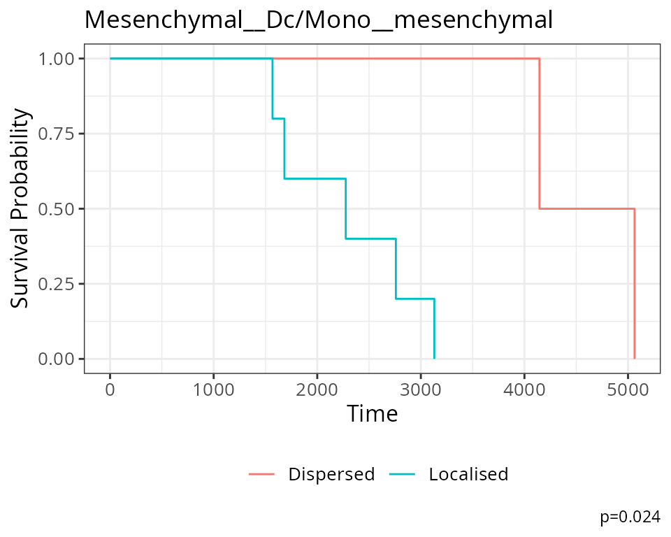
SpatioMark: Identifying continuous changes in cell state
Changes in cell states can be analytically framed as the change in abundance of a gene or protein within a particular cell type. We can use marker expression to identify and quantify evidence of cell interactions that catalyse cell state changes. This approach measures how protein markers in a cell change with spatial proximity and abundance to other cell types. The methods utilised here will thereby provide a framework to explore how the dynamic behaviour of cells are altered by the agents they are surrounded by.
Continuous cell state changes within a single image
The first step in analysing these changes is to calculate the spatial
proximity (getDistances) and abundance
(getAbundances) of each cell to every cell type. These
values will then be stored in the reducedDims slot of the
SingleCellExperiment object under the names
distances and abundances respectively.
kerenSCE <- getDistances(kerenSCE,
maxDist = 200,
nCores = 1)
kerenSCE <- getAbundances(kerenSCE,
r = 200,
nCores = 1)First, let’s examine the same effect observed earlier with Kontextual - the localisation between p53-positive keratin/tumour cells and macrophages in the context of total keratin/tumour cells for image 6 of the Keren et al. dataset.
Statial provides two main functions to assess this relationship -
calcStateChanges and plotStateChanges. We can
use calcStateChanges to examine the relationship between 2
cell types for 1 marker in a specific image. In this case, we’re
examining the relationship between keratin/tumour cells
(from = Keratin_Tumour) and macrophages
(to = "Macrophages") for the marker p53
(marker = "p53") in image = "6". We can
appreciate that the fdr statistic for this relationship is
significant, with a negative tvalue, indicating that the expression of
p53 in keratin/tumour cells decreases as distance from macrophages
increases.
stateChanges <- calcStateChanges(
cells = kerenSCE,
type = "distances",
image = "6",
from = "Keratin_Tumour",
to = "Macrophages",
marker = "p53",
nCores = 1)
stateChanges
#> imageID primaryCellType otherCellType marker coef tval
#> 1 6 Keratin_Tumour Macrophages p53 -0.001402178 -7.010113
#> pval fdr
#> 1 2.868257e-12 2.868257e-12Statial also provides a convenient function for visualising this
interaction - plotStateChanges. Here, again we can specify
image = 6 and our main cell types of interest,
keratin/tumour cells and macrophages, and our marker p53, in the same
format as calcStateChanges.
Through this analysis, we can observe that keratin/tumour cells closer to a group of macrophages tend to have higher expression of p53, as observed in the first graph. This relationship is quantified with the second graph, showing an overall decrease of p53 expression in keratin/tumour cells as distance to macrophages increase.
These results allow us to essentially arrive at the same result as Kontextual, which calculated a localisation between p53+ keratin/tumour cells and macrophages in the wider context of keratin/tumour cells.
p <- plotStateChanges(
cells = kerenSCE,
type = "distances",
image = "6",
from = "Keratin_Tumour",
to = "Macrophages",
marker = "p53",
size = 1,
shape = 19,
interactive = FALSE,
plotModelFit = FALSE,
method = "lm")
p
#> $image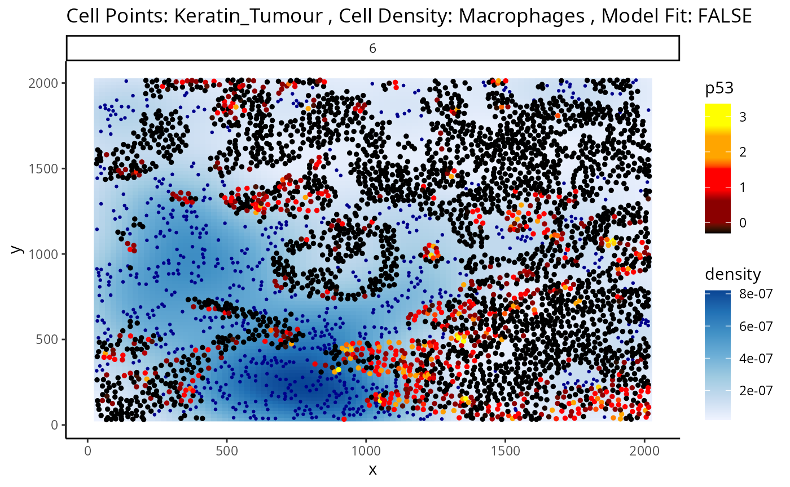
#>
#> $scatter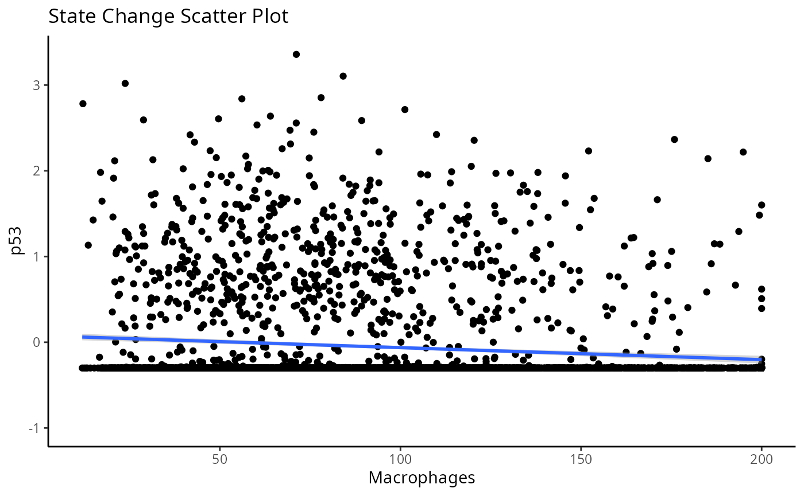 ## Continuous cell state changes across all images
Beyond looking at single cell-to-cell interactions for a single
image, we can also look at all interactions across all images. The
calcStateChanges function provided by Statial can be
expanded for this exact purpose - by not specifying cell types, a
marker, or an image, calcStateChanges will examine the most
significant correlations between distance and marker expression across
the entire dataset. Here, we’ve filtered out the most significant
interactions to only include those found within image 6 of the Keren et
al. dataset.
stateChanges <- calcStateChanges(
cells = kerenSCE,
type = "distances",
nCores = 1,
minCells = 100)
stateChanges |>
filter(imageID == 6) |>
head(n = 10)
#> imageID primaryCellType otherCellType marker coef tval
#> 1 6 Keratin_Tumour Unidentified Na 0.004218419 25.03039
#> 2 6 Keratin_Tumour Macrophages HLA_Class_1 -0.003823497 -24.69629
#> 3 6 Keratin_Tumour CD4_Cell HLA_Class_1 -0.003582774 -23.87797
#> 4 6 Keratin_Tumour Unidentified Beta.catenin 0.005893120 23.41953
#> 5 6 Keratin_Tumour CD8_Cell HLA_Class_1 -0.003154544 -23.13804
#> 6 6 Keratin_Tumour Dc/Mono HLA_Class_1 -0.003353834 -22.98944
#> 7 6 Keratin_Tumour CD3_Cell HLA_Class_1 -0.003123446 -22.63197
#> 8 6 Keratin_Tumour Tumour HLA_Class_1 0.003684079 21.94265
#> 9 6 Keratin_Tumour CD4_Cell Fe -0.003457338 -21.43550
#> 10 6 Keratin_Tumour CD4_Cell phospho.S6 -0.002892457 -20.50767
#> pval fdr
#> 1 6.971648e-127 1.176442e-123
#> 2 7.814253e-124 1.236215e-120
#> 3 1.745242e-116 2.208779e-113
#> 4 1.917245e-112 2.257178e-109
#> 5 5.444541e-110 5.991836e-107
#> 6 1.053130e-108 1.110701e-105
#> 7 1.237988e-105 1.205229e-102
#> 8 8.188258e-100 7.025803e-97
#> 9 1.287478e-95 9.727951e-93
#> 10 3.928912e-88 2.583081e-85In image 6, the majority of the top 10 most significant interactions occur between keratin/tumour cells and an immune population, and many of these interactions appear to involve the HLA class I ligand.
We can examine some of these interactions further with the
plotStateChanges function. Taking a closer examination of
the relationship between macrophages and keratin/tumour HLA class I
expression, the plot below shows us a clear visual correlation - as
macrophage density increases, keratin/tumour cells increase their
expression HLA class I.
Biologically, HLA Class I is a ligand which exists on all nucleated cells, tasked with presenting internal cell antigens for recognition by the immune system, marking aberrant cells for destruction by either CD8+ T cells or NK cells.
p <- plotStateChanges(
cells = kerenSCE,
type = "distances",
image = "6",
from = "Keratin_Tumour",
to = "Macrophages",
marker = "HLA_Class_1",
size = 1,
shape = 19,
interactive = FALSE,
plotModelFit = FALSE,
method = "lm")
p
#> $image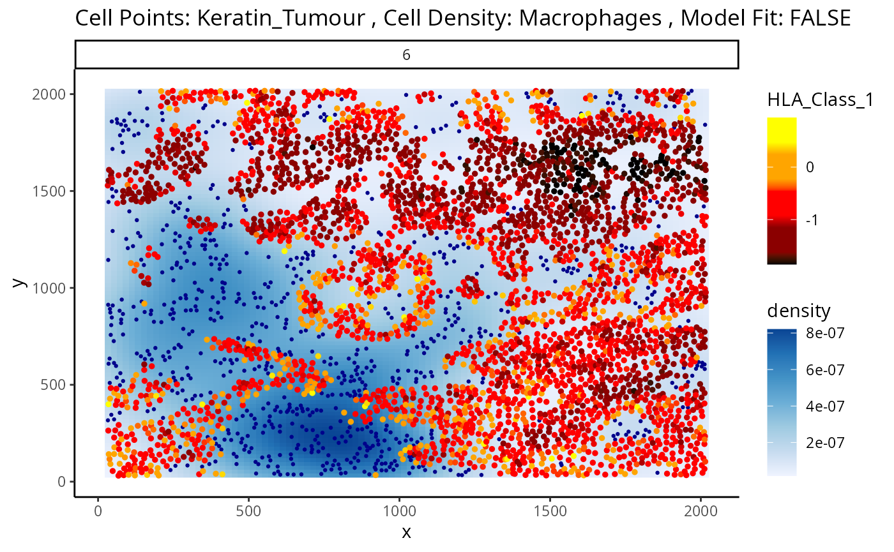
#>
#> $scatter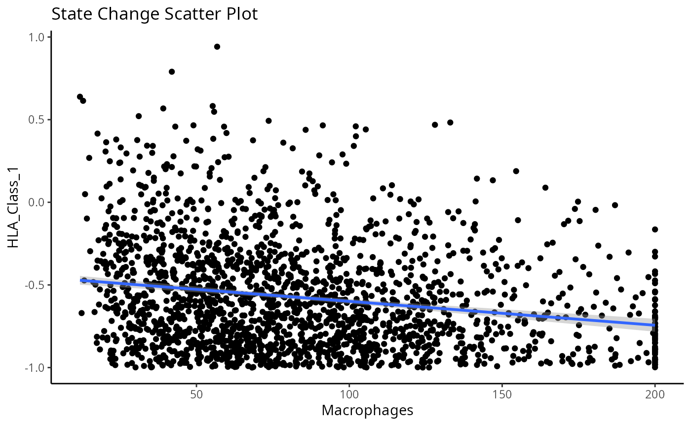
Next, let’s take a look at the top 10 most significant results across all images.
stateChanges |> head(n = 10)
#> imageID primaryCellType otherCellType marker coef tval
#> 8674 35 CD4_Cell B CD20 -0.029185750 -40.57355
#> 8770 35 CD4_Cell Dc/Mono CD20 0.019125946 40.53436
#> 1819 35 B Dc/Mono phospho.S6 0.005282065 40.41385
#> 8779 35 CD4_Cell Dc/Mono phospho.S6 0.004033218 34.72882
#> 1813 35 B Dc/Mono HLA.DR 0.011120703 34.15344
#> 1971 35 B other immune P 0.011182182 34.14375
#> 8626 35 CD4_Cell CD3_Cell CD20 0.016349492 33.91901
#> 1816 35 B Dc/Mono H3K9ac 0.005096632 33.99856
#> 2011 35 B other immune phospho.S6 0.005986586 33.66466
#> 1818 35 B Dc/Mono H3K27me3 0.006980810 33.22740
#> pval fdr
#> 8674 7.019343e-282 3.553472e-277
#> 8770 1.891267e-281 4.787176e-277
#> 1819 5.306590e-278 8.954694e-274
#> 8779 4.519947e-219 5.720445e-215
#> 1813 8.401034e-212 8.505879e-208
#> 1971 1.056403e-211 8.913225e-208
#> 8626 1.219488e-210 8.819335e-207
#> 1816 3.266533e-210 2.067062e-206
#> 2011 8.545691e-207 4.806856e-203
#> 1818 2.438769e-202 1.234603e-198Immediately, we can appreciate that a couple of these interactions are not biologically plausible. One of the most significant interactions occurs between B cells and CD4 T cells in image 35, where CD4 T cells are found to increase in CD20 expression when in close proximity to B cells. Biologically, CD20 is a highly specific ligand for B cells, and under healthy circumstances are usually not expressed in T cells.
Could this potentially be an artefact of
calcStateChanges? We can examine the image through the
plotStateChanges function, where we indeed observe a strong
increase in CD20 expression in T cells nearby B cell populations.
p <- plotStateChanges(
cells = kerenSCE,
type = "distances",
image = "35",
from = "CD4_Cell",
to = "B",
marker = "CD20",
size = 1,
shape = 19,
interactive = FALSE,
plotModelFit = FALSE,
method = "lm")
p
#> $image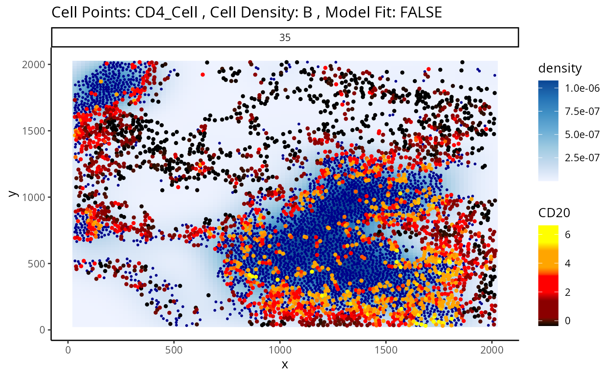
#>
#> $scatter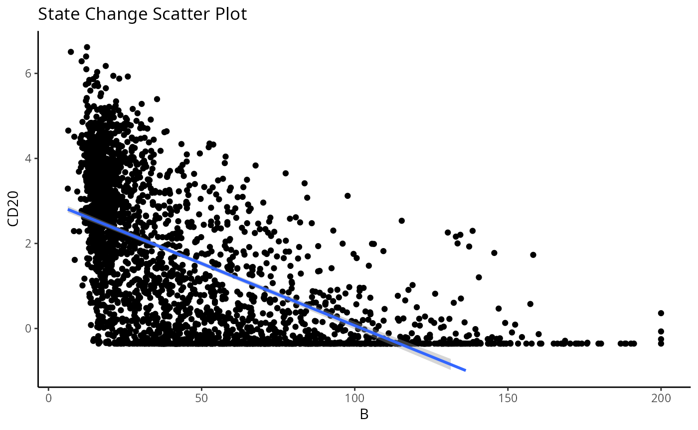
So why are T cells expressing CD20? This brings us to a key problem of cell segmentation - contamination.
Contamination (Lateral marker spill over)
Contamination, or lateral marker spill over is an issue that results in a cell’s marker expressions being wrongly attributed to another adjacent cell. This issue arises from incorrect segmentation where components of one cell are wrongly determined as belonging to another cell. Alternatively, this issue can arise when antibodies used to tag and measure marker expressions don’t latch on properly to a cell of interest, thereby resulting in residual markers being wrongly assigned as belonging to a cell near the intended target cell. It is important that we either correct or account for this incorrect attribution of markers in our modelling process. This is critical in understanding whether significant cell-cell interactions detected are an artefact of technical measurement errors driven by spill over or are real biological changes that represent a shift in a cell’s state.
To circumvent this problem, Statial provides a function that predicts
the probability that a cell is any particular cell type -
calcContamination. calcContamination returns a
dataframe of probabilities demarcating the chance of a cell being any
particular cell type. This dataframe is stored under
contaminations in the reducedDim slot of the
SingleCellExperiment object. It also provides the
rfMainCellProb column, which provides the probability that
a cell is indeed the cell type it has been designated. E.g. For a cell
designated as CD8, rfMainCellProb could give a 80% chance that the cell
is indeed CD8, due to contamination.
We can then introduce these probabilities as covariates into our
linear model by setting contamination = TRUE as a parameter
in our calcStateChanges function. However, this is not a
perfect solution for the issue of contamination. As we can see, despite
factoring in contamination into our linear model, the correlation
between B cell density and CD20 expression in CD4 T cells remains one of
the most significant interactions in our model.
kerenSCE <- calcContamination(kerenSCE)
stateChangesCorrected <- calcStateChanges(
cells = kerenSCE,
type = "distances",
nCores = 1,
minCells = 100,
contamination = TRUE)
stateChangesCorrected |> head(n = 20)
#> imageID primaryCellType otherCellType marker coef tval
#> 8674 35 CD4_Cell B CD20 -0.024786419 -34.95527
#> 8770 35 CD4_Cell Dc/Mono CD20 0.015872636 33.46048
#> 8779 35 CD4_Cell Dc/Mono phospho.S6 0.003580507 29.44495
#> 1819 35 B Dc/Mono phospho.S6 0.004240940 29.40981
#> 8626 35 CD4_Cell CD3_Cell CD20 0.013479231 29.16784
#> 8629 35 CD4_Cell CD3_Cell HLA.DR 0.010217422 28.71325
#> 29188 3 Keratin_Tumour DC Ca -0.013671664 -28.87189
#> 1669 35 B CD3_Cell HLA.DR 0.008906451 25.52653
#> 27641 21 Keratin_Tumour DC Pan.Keratin -0.006003833 -24.85754
#> 1813 35 B Dc/Mono HLA.DR 0.008809238 25.09780
#> 8763 35 CD4_Cell Dc/Mono CSF.1R 0.008552018 24.88996
#> 31825 6 Keratin_Tumour Unidentified Na 0.004216952 24.62453
#> 8635 35 CD4_Cell CD3_Cell phospho.S6 0.002914333 24.55304
#> 2011 35 B other immune phospho.S6 0.004495837 24.04748
#> 1675 35 B CD3_Cell phospho.S6 0.003565036 23.67518
#> 31918 6 Keratin_Tumour Macrophages HLA_Class_1 -0.003441291 -22.78547
#> 1816 35 B Dc/Mono H3K9ac 0.003725499 22.92998
#> 2008 35 B other immune H3K9ac 0.004607261 22.81682
#> 31774 6 Keratin_Tumour CD4_Cell HLA_Class_1 -0.003277158 -22.54297
#> 29186 3 Keratin_Tumour DC Si -0.005542163 -22.94915
#> pval fdr
#> 8674 3.141399e-221 1.590302e-216
#> 8770 1.023792e-205 2.591422e-201
#> 8779 1.532688e-165 2.586360e-161
#> 1819 2.069706e-164 2.619420e-160
#> 8626 7.336926e-163 7.428491e-159
#> 8629 1.711503e-158 1.444052e-154
#> 29188 5.168071e-156 3.737549e-152
#> 1669 1.802832e-128 1.140832e-124
#> 27641 2.879473e-128 1.619671e-124
#> 1813 1.107925e-124 5.608757e-121
#> 8763 2.627293e-123 1.209128e-119
#> 31825 3.892314e-123 1.642037e-119
#> 8635 2.371224e-120 9.233913e-117
#> 2011 1.440258e-115 5.207974e-112
#> 1675 2.138478e-112 7.217220e-109
#> 31918 6.507296e-107 2.058908e-103
#> 1816 3.819083e-106 1.137278e-102
#> 2008 3.310591e-105 9.310853e-102
#> 31774 7.675714e-105 2.045134e-101
#> 29186 8.200541e-105 2.075721e-101However, this does not mean factoring in contamination into our linear model was ineffective.
Whilst our correction attempts do not rectify every relationship which arises due to contamination, we show that a significant portion of these relationships are rectified. We can show this by plotting a ROC curve of true positives against false positives. In general, cell type specific markers such as CD4, CD8, and CD20 should not change in cells they are not specific to. Therefore, relationships detected to be significant involving these cell type markers are likely false positives and will be treated as such for the purposes of evaluation. Meanwhile, cell state markers are predominantly likely to be true positives.
Plotting the relationship between false positives and true positives, we’d expect the contamination correction to be greatest in the relationships with the top 100 lowest p values, where we indeed see more true positives than false positives with contamination correction.
cellTypeMarkers <- c("CD3", "CD4", "CD8", "CD56", "CD11c", "CD68", "CD45", "CD20")
values = c("blue", "red")
names(values) <- c("None", "Corrected")
df <- rbind(data.frame(TP =cumsum(stateChanges$marker %in% cellTypeMarkers), FP = cumsum(!stateChanges$marker %in% cellTypeMarkers), type = "None"),
data.frame(TP =cumsum(stateChangesCorrected$marker %in% cellTypeMarkers), FP = cumsum(!stateChangesCorrected$marker %in% cellTypeMarkers), type = "Corrected"))
ggplot(df, aes(x = TP, y = FP, colour = type)) + geom_line()+ labs(y = "Cell state marker", x = "Cell type marker") + scale_colour_manual(values = values)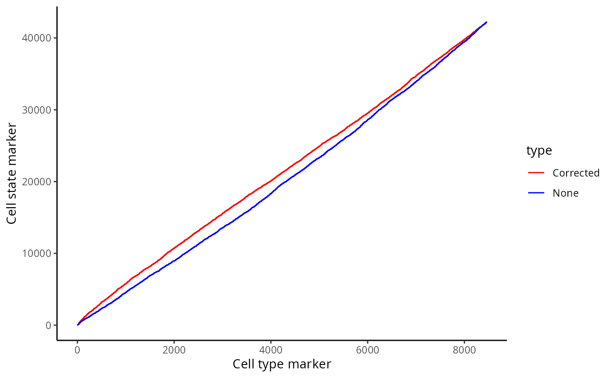
Here, we zoom in on the ROC curve where the top 100 lowest p values occur, where we indeed see more true positives than false positives with contamination correction.
ggplot(df, aes(x = TP, y = FP, colour = type)) + geom_line()+ xlim(0,100) + ylim(0,1000)+ labs(y = "Cell state marker", x = "Cell type marker") + scale_colour_manual(values = values)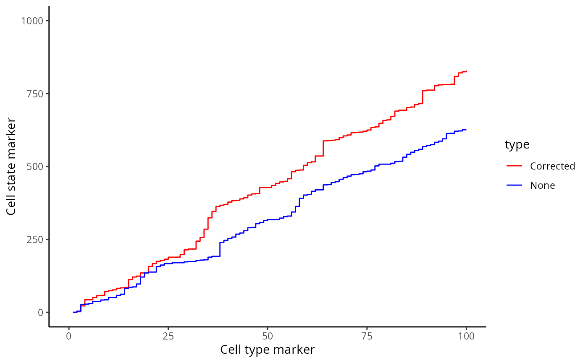
Associate continuous state changes with survival outcomes
Similiar to Kontextual, we can run a similar survival
analysis using our state changes results. Here, prepMatrix
extracts the coefficients, or the coef column of
stateChanges by default. To use the t values instead,
specify column = "tval" in the prepMatrix
function.
# Preparing features for Statial
stateMat <- prepMatrix(stateChanges)
# Ensuring rownames of stateMat match up with rownames of the survival vector
stateMat <- stateMat[names(kerenSurv), ]
# Remove some very small values
stateMat <- stateMat[,colMeans(abs(stateMat)>0.0001)>.8]
survivalResults <- colTest(stateMat, kerenSurv, type = "survival")
head(survivalResults)
#> coef se.coef pval adjPval
#> Keratin_Tumour__Keratin_Tumour__EGFR -390 190 0.037 0.74
#> Macrophages__Mesenchymal__H3K9ac -1400 690 0.038 0.74
#> Macrophages__CD8_Cell__CD45 -880 440 0.045 0.74
#> Macrophages__CD8_Cell__IDO -1500 790 0.050 0.74
#> Macrophages__Mesenchymal__IDO 580 300 0.051 0.74
#> Keratin_Tumour__CD4_Cell__Keratin6 1600 830 0.051 0.74
#> cluster
#> Keratin_Tumour__Keratin_Tumour__EGFR Keratin_Tumour__Keratin_Tumour__EGFR
#> Macrophages__Mesenchymal__H3K9ac Macrophages__Mesenchymal__H3K9ac
#> Macrophages__CD8_Cell__CD45 Macrophages__CD8_Cell__CD45
#> Macrophages__CD8_Cell__IDO Macrophages__CD8_Cell__IDO
#> Macrophages__Mesenchymal__IDO Macrophages__Mesenchymal__IDO
#> Keratin_Tumour__CD4_Cell__Keratin6 Keratin_Tumour__CD4_Cell__Keratin6For our state changes results,
Keratin_Tumour__CD4_Cell__Keratin6 is the most significant
pairwise relationship which contributes to patient survival. That is,
the relationship between HLA class I expression in keratin/tumour cells
and their spatial proximity to mesenchymal cells. As there is a negative
coeffcient associated with this relationship, which tells us that higher
HLA class I expression in keratin/tumour cells nearby mesenchymal cell
populations lead to poorer survival outcomes for patients.
# Selecting the most significant relationship
survRelationship = stateMat[["Keratin_Tumour__CD4_Cell__Keratin6"]]
survRelationship = ifelse(survRelationship > median(survRelationship), "Higher expression in close cells", "Lower expression in close cells")
# Plotting Kaplan-Meier curve
survfit2(kerenSurv ~ survRelationship) |>
ggsurvfit() +
add_pvalue() +
ggtitle("Keratin_Tumour__CD4_Cell__Keratin6")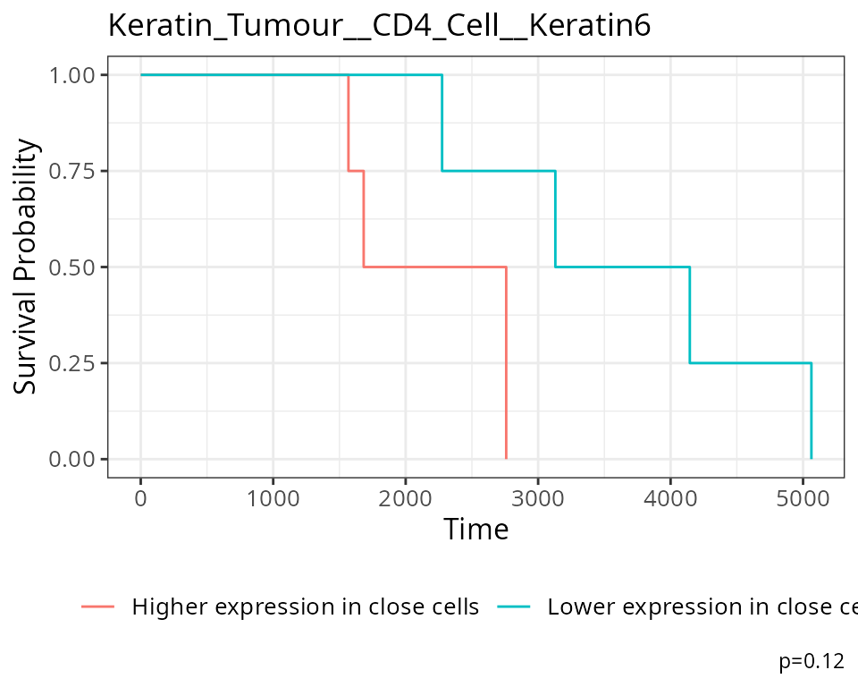
Region analysis using lisaClust
Next we can cluster areas with similar spatial interactions to
identify regions using lisaClust. Here we set k = 5 to
identify 5 regions.
set.seed(51773)
# Preparing features for lisaClust
kerenSCE <- lisaClust::lisaClust(kerenSCE, k = 5)The regions identified by licaClust can be visualised using the
hatchingPlot function.
# Use hatching to visualise regions and cell types.
lisaClust::hatchingPlot(kerenSCE,
useImages = "5",
line.spacing = 41, # spacing of lines
nbp = 100 # smoothness of lines
) 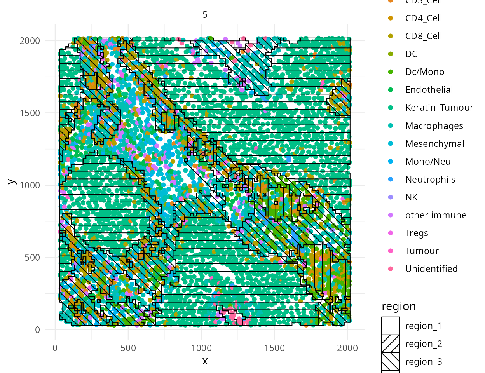
Marker Means
Statial provides functionality to identify the average
marker expression of a given cell type in a given region, using the
getMarkerMeans function. Similar to the analysis above,
these features can also be used for survival analysis.
cellTypeRegionMeans <- getMarkerMeans(kerenSCE,
imageID = "imageID",
cellType = "cellType",
region = "region")
survivalResults = colTest(cellTypeRegionMeans[names(kerenSurv),], kerenSurv, type = "survival")
head(survivalResults)
#> coef se.coef pval adjPval
#> PD.L1__CD3_Cell__region_1 2000 85.0 0.0e+00 0.0000
#> CD31__CD8_Cell__region_3 190 5.4 0.0e+00 0.0000
#> IDO__Keratin_Tumour__region_5 20 2.0 0.0e+00 0.0000
#> IDO__Macrophages__region_5 47 10.0 2.5e-06 0.0024
#> CD138__B__region_5 -180 70.0 1.0e-02 0.8100
#> HLA_Class_1__B__region_5 33 13.0 1.2e-02 0.8100
#> cluster
#> PD.L1__CD3_Cell__region_1 PD.L1__CD3_Cell__region_1
#> CD31__CD8_Cell__region_3 CD31__CD8_Cell__region_3
#> IDO__Keratin_Tumour__region_5 IDO__Keratin_Tumour__region_5
#> IDO__Macrophages__region_5 IDO__Macrophages__region_5
#> CD138__B__region_5 CD138__B__region_5
#> HLA_Class_1__B__region_5 HLA_Class_1__B__region_5Patient classification
Finally we demonstrate how we can use ClassifyR to
perform patient classification with the features generated from
Statial. In addition to the kontextual, state changes, and
marker means values, we also calculate cell type proportions and region
proportions using the getProp function in
spicyR. Here we perform 3 fold cross validation with 10
repeats, using a CoxPH model for survival classification, feature
selection is also performed by selecting the top 10 features per fold
using a CoxPH model.
# Calculate cell type and region proportions
cellTypeProp <- getProp(kerenSCE,
feature = "cellType",
imageID = "imageID")
regionProp <- getProp(kerenSCE,
feature = "region",
imageID = "imageID")
# Combine all the features into a list for classification
featureList <- list(states = stateMat,
kontextual = kontextMat,
regionMarkerMeans = cellTypeRegionMeans,
cellTypeProp = cellTypeProp,
regionProp = regionProp
)
# Ensure the rownames of the features match the order of the survival vector
featureList <- lapply(featureList, function(x)x[names(kerenSurv),])
set.seed(51773)
kerenCV = crossValidate(
measurements = featureList,
outcome = kerenSurv,
classifier = "CoxPH",
selectionMethod = "CoxPH",
nFolds = 5,
nFeatures = 10,
nRepeats = 20,
nCores = 1
)Here, we use the performancePlot function to assess the
C-index from each repeat of the 3-fold cross-validation. We can see the
resulting C-indexes are very variable due to the dataset only containing
10 images.
# Calculate AUC for each cross-validation repeat and plot.
performancePlot(kerenCV,
characteristicsList = list(x = "Assay Name")
) +
theme(axis.text.x = element_text(angle = 45, vjust = 1, hjust=1))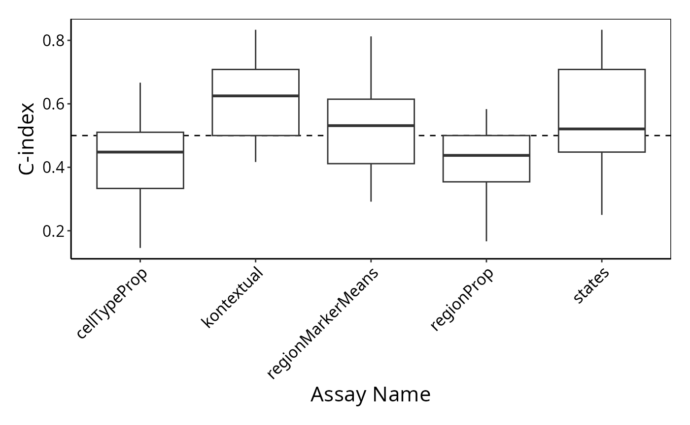
References
Keren, L., Bosse, M., Marquez, D., Angoshtari, R., Jain, S., Varma, S., Yang, S. R., Kurian, A., Van Valen, D., West, R., Bendall, S. C., & Angelo, M. (2018). A Structured Tumor-Immune Microenvironment in Triple Negative Breast Cancer Revealed by Multiplexed Ion Beam Imaging. Cell, 174(6), 1373-1387.e1319. (DOI)
sessionInfo
sessionInfo()
#> R version 4.3.1 (2023-06-16)
#> Platform: x86_64-pc-linux-gnu (64-bit)
#> Running under: EndeavourOS
#>
#> Matrix products: default
#> BLAS: /usr/lib/libblas.so.3.11.0
#> LAPACK: /usr/lib/liblapack.so.3.11.0
#>
#> locale:
#> [1] LC_CTYPE=en_AU.UTF-8 LC_NUMERIC=C
#> [3] LC_TIME=en_AU.UTF-8 LC_COLLATE=en_AU.UTF-8
#> [5] LC_MONETARY=en_AU.UTF-8 LC_MESSAGES=en_AU.UTF-8
#> [7] LC_PAPER=en_AU.UTF-8 LC_NAME=C
#> [9] LC_ADDRESS=C LC_TELEPHONE=C
#> [11] LC_MEASUREMENT=en_AU.UTF-8 LC_IDENTIFICATION=C
#>
#> time zone: Australia/Sydney
#> tzcode source: system (glibc)
#>
#> attached base packages:
#> [1] stats4 stats graphics grDevices utils datasets methods
#> [8] base
#>
#> other attached packages:
#> [1] tibble_3.2.1 ggsurvfit_0.3.1
#> [3] ggplot2_3.4.4 SingleCellExperiment_1.22.0
#> [5] dplyr_1.1.3 lisaClust_1.8.1
#> [7] ClassifyR_3.4.11 survival_3.5-7
#> [9] BiocParallel_1.34.2 MultiAssayExperiment_1.26.0
#> [11] SummarizedExperiment_1.30.2 Biobase_2.60.0
#> [13] GenomicRanges_1.52.1 GenomeInfoDb_1.36.4
#> [15] IRanges_2.34.1 MatrixGenerics_1.12.3
#> [17] matrixStats_1.0.0 S4Vectors_0.38.2
#> [19] BiocGenerics_0.46.0 generics_0.1.3
#> [21] spicyR_1.12.2 Statial_1.2.4
#> [23] BiocStyle_2.28.1
#>
#> loaded via a namespace (and not attached):
#> [1] RColorBrewer_1.1-3 jsonlite_1.8.7
#> [3] magrittr_2.0.3 spatstat.utils_3.0-3
#> [5] magick_2.7.5 nloptr_2.0.3
#> [7] farver_2.1.1 rmarkdown_2.24
#> [9] fs_1.6.3 zlibbioc_1.46.0
#> [11] ragg_1.2.5 vctrs_0.6.4
#> [13] spatstat.explore_3.2-3 memoise_2.0.1
#> [15] minqa_1.2.6 DelayedMatrixStats_1.22.6
#> [17] RCurl_1.98-1.12 rstatix_0.7.2
#> [19] htmltools_0.5.6 S4Arrays_1.0.6
#> [21] curl_5.0.2 broom_1.0.5
#> [23] Rhdf5lib_1.22.1 rhdf5_2.44.0
#> [25] sass_0.4.7 bslib_0.5.1
#> [27] htmlwidgets_1.6.2 desc_1.4.2
#> [29] plyr_1.8.9 plotly_4.10.2
#> [31] cachem_1.0.8 lifecycle_1.0.3
#> [33] pkgconfig_2.0.3 Matrix_1.6-1
#> [35] R6_2.5.1 fastmap_1.1.1
#> [37] GenomeInfoDbData_1.2.10 numDeriv_2016.8-1.1
#> [39] digest_0.6.33 colorspace_2.1-0
#> [41] tensor_1.5 rprojroot_2.0.3
#> [43] dqrng_0.3.1 textshaping_0.3.6
#> [45] ggpubr_0.6.0 beachmat_2.16.0
#> [47] labeling_0.4.3 spatstat.sparse_3.0-2
#> [49] fansi_1.0.5 mgcv_1.8-42
#> [51] httr_1.4.7 polyclip_1.10-4
#> [53] abind_1.4-5 compiler_4.3.1
#> [55] withr_2.5.1 backports_1.4.1
#> [57] carData_3.0-5 HDF5Array_1.28.1
#> [59] ggforce_0.4.1 R.utils_2.12.2
#> [61] ggsignif_0.6.4 MASS_7.3-60
#> [63] concaveman_1.1.0 DelayedArray_0.26.7
#> [65] rjson_0.2.21 tools_4.3.1
#> [67] ranger_0.15.1 goftest_1.2-3
#> [69] R.oo_1.25.0 glue_1.6.2
#> [71] nlme_3.1-162 rhdf5filters_1.12.1
#> [73] grid_4.3.1 reshape2_1.4.4
#> [75] gtable_0.3.4 spatstat.data_3.0-1
#> [77] class_7.3-22 R.methodsS3_1.8.2
#> [79] tidyr_1.3.0 data.table_1.14.8
#> [81] car_3.1-2 utf8_1.2.4
#> [83] XVector_0.40.0 spatstat.geom_3.2-5
#> [85] pillar_1.9.0 stringr_1.5.0
#> [87] limma_3.56.2 splines_4.3.1
#> [89] tweenr_2.0.2 lattice_0.21-8
#> [91] deldir_1.0-9 tidyselect_1.2.0
#> [93] locfit_1.5-9.8 scuttle_1.10.3
#> [95] knitr_1.44 V8_4.3.3
#> [97] bookdown_0.35 edgeR_3.42.4
#> [99] xfun_0.40 DropletUtils_1.20.0
#> [101] pheatmap_1.0.12 fftwtools_0.9-11
#> [103] scam_1.2-14 stringi_1.7.12
#> [105] lazyeval_0.2.2 yaml_2.3.7
#> [107] boot_1.3-28.1 evaluate_0.21
#> [109] codetools_0.2-19 BiocManager_1.30.22
#> [111] cli_3.6.1 systemfonts_1.0.4
#> [113] munsell_0.5.0 jquerylib_0.1.4
#> [115] Rcpp_1.0.11 spatstat.random_3.1-6
#> [117] parallel_4.3.1 pkgdown_2.0.7
#> [119] sparseMatrixStats_1.12.2 bitops_1.0-7
#> [121] lme4_1.1-34 SpatialExperiment_1.10.0
#> [123] viridisLite_0.4.2 lmerTest_3.1-3
#> [125] scales_1.2.1 purrr_1.0.2
#> [127] crayon_1.5.2 rlang_1.1.1